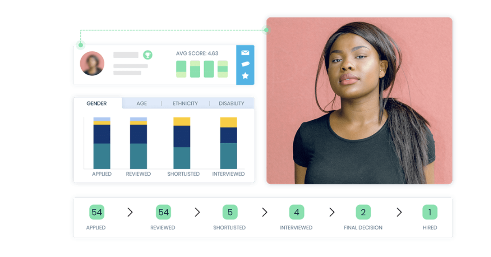
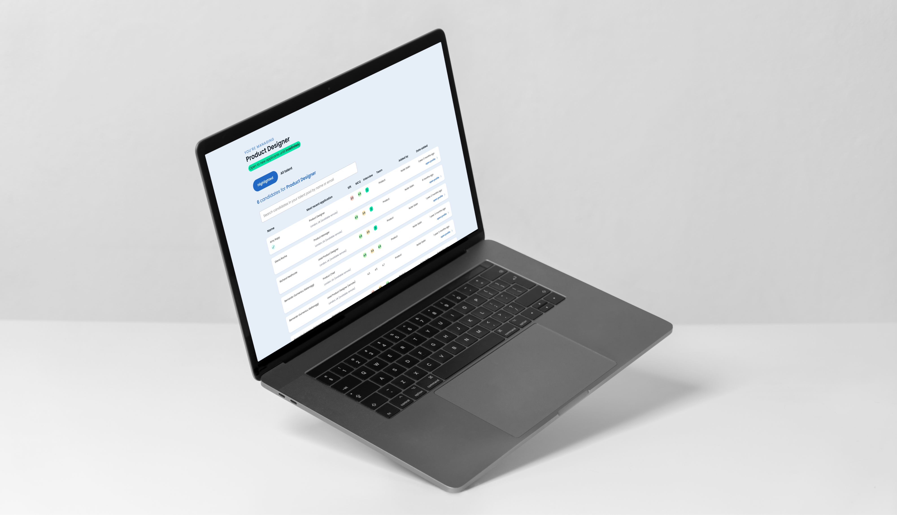
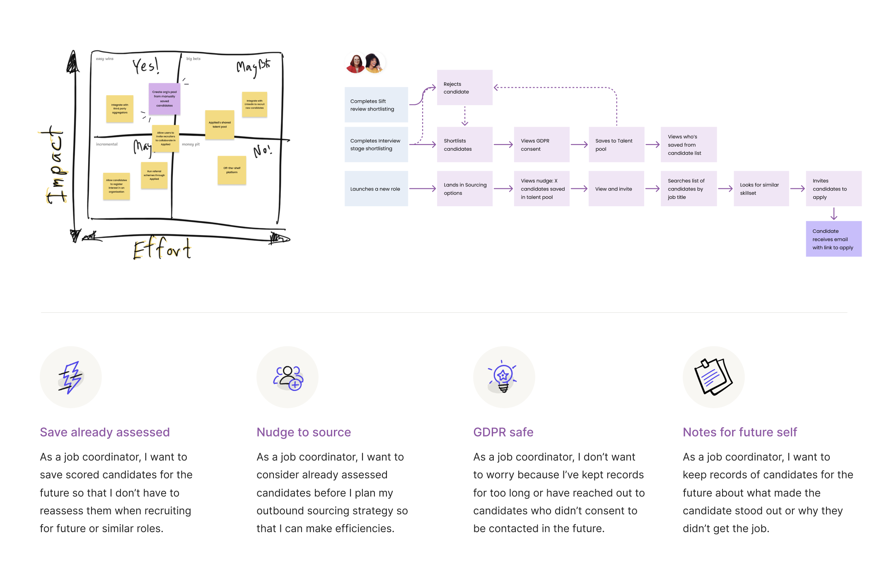
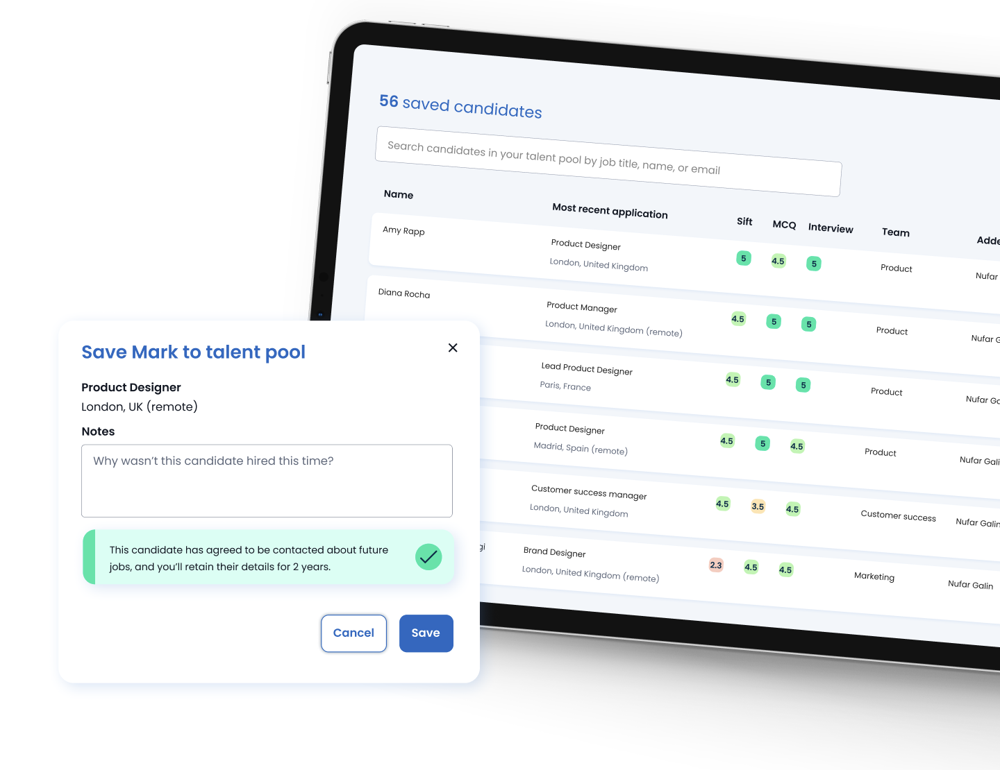
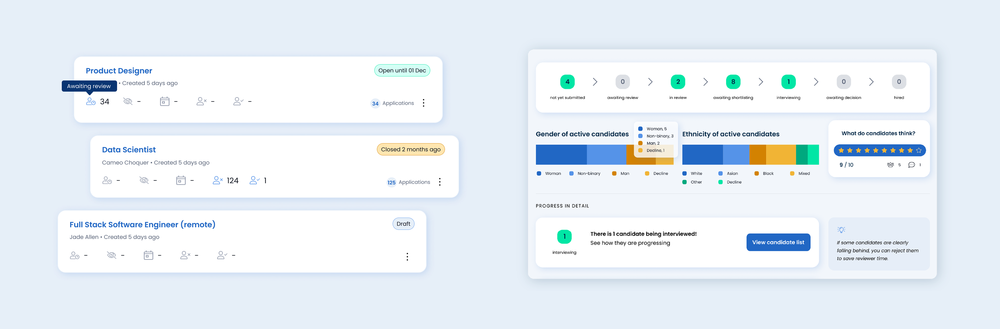
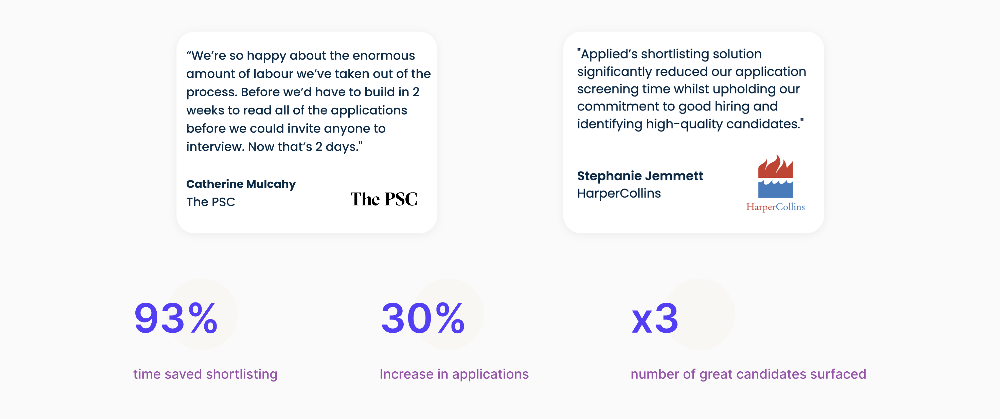
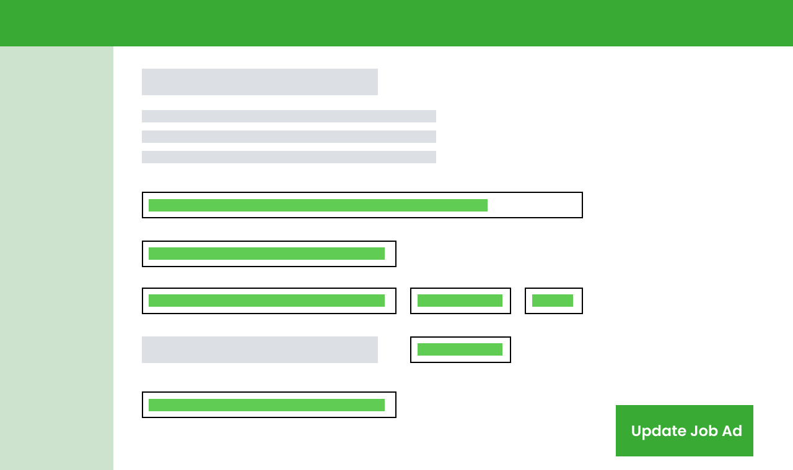
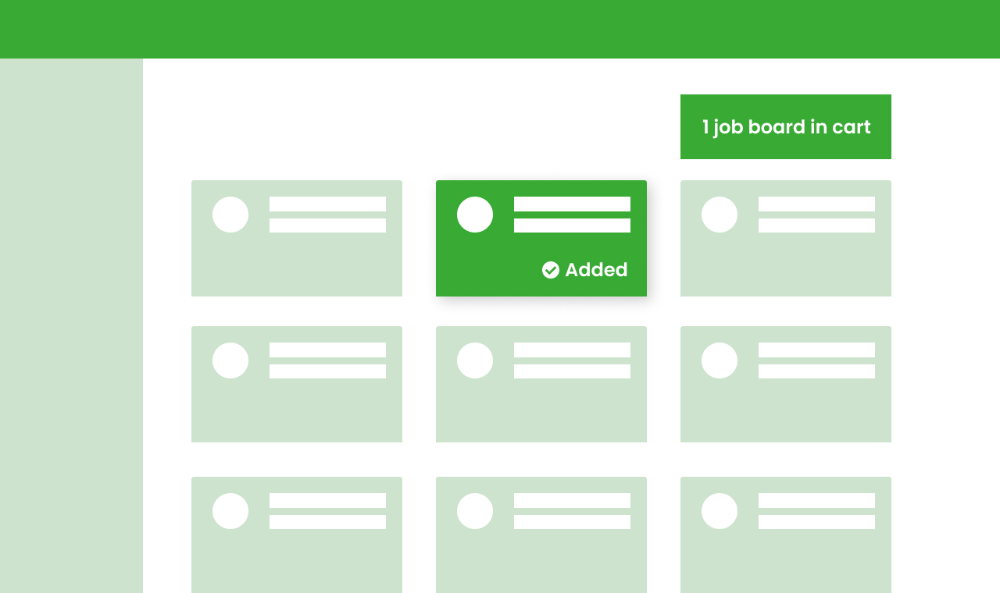
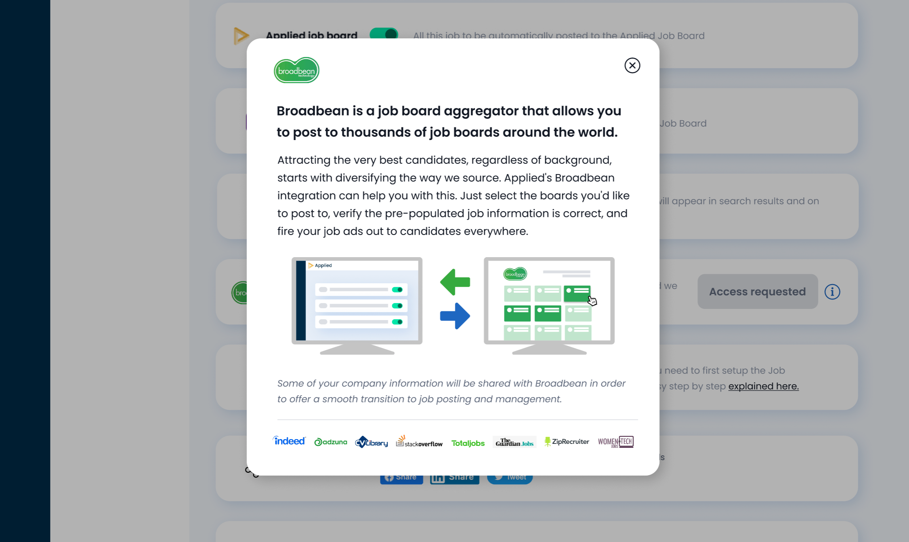
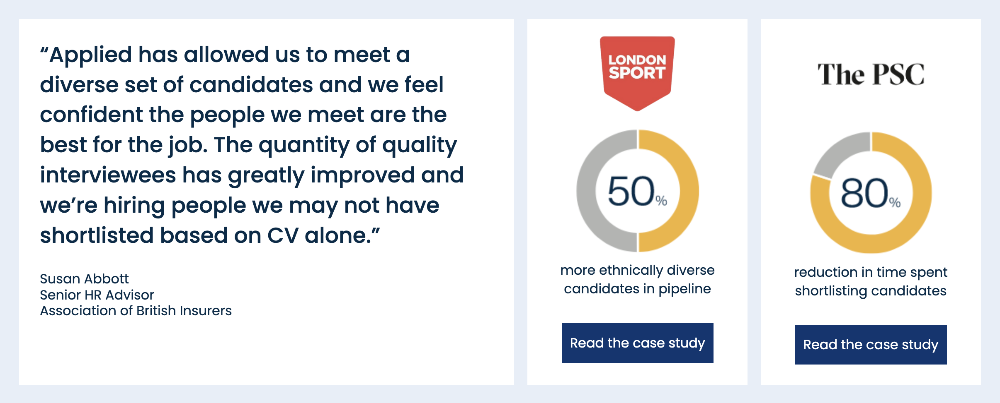

PRODUCT DESIGN – UX, UI
Bias-Free Hiring, at a speed
The Product
Applied is the all-in-one platform for fairer, more predictive hiring. Born out of the UK Government’s Behavioural Insights Team, the platform is designed with behavioural science at its core to reduce bias and accurately forecast job performance at every step of the process
A hiring platform purpose-built to enable organisational accountability and fuel an enjoyable, fair experience for everyone in the talent ecosystem, from candidate to hiring manager.
Business context
While the core debiasing features were in place, the product needed to evolve to compete with other ATS platforms that prioritised speed and efficiency. Creating a fairer hiring process naturally introduced a bit more friction, requiring teams to spend more time reviewing and adjusting. To stay competitive, we had to improve other parts of the experience.
The goal: Improve client retention by streamlining the hiring process.
The goal: Improve client retention by streamlining the hiring process.

The Opportunity
To evolve the product into a more competitive, full-featured ATS without compromising its core mission of fairness.
As the lead Product Designer on the Applicant Tracking System (ATS) team, I was responsible for the user research, design and delivery for the hiring flow—from job creation to making a hire—the most critical and high-impact area of our product. Over the course of a year, I guided the team through a strategic roadmap, launched key features, and delivered measurable gains in both revenue and user engagement.
As the lead Product Designer on the Applicant Tracking System (ATS) team, I was responsible for the user research, design and delivery for the hiring flow—from job creation to making a hire—the most critical and high-impact area of our product. Over the course of a year, I guided the team through a strategic roadmap, launched key features, and delivered measurable gains in both revenue and user engagement.
Process
With support from my product manager, we kicked off Discovery with a research phase, conducting moderated interviews across a range of customers. Our goal was to uncover user needs and pain points within the hiring pipeline and identify opportunities to improve speed, efficiency, and the overall user experience.

I created an experience map to visualise the end-to-end user journey, mapping common insights from our research to specific stages of the hiring process. This helped us identify where users needed more support and allowed us to prioritise design efforts based on the most critical pain points and opportunities.
The insights we gathered pointed to three key focus areas:
🎣 Sourcing
Helping users source larger pools of candidates more quickly, without compromising on quality or fairness.
⚙️ Viewing & Managing
Giving users a stronger sense of control throughout the process and enabling better team collaboration.
📊 Reporting
Empowering hiring managers to champion diversity and inclusion within their organisations.
Guided by these findings, I worked on the features below:
🎣 Sourcing
Helping users source larger pools of candidates more quickly, without compromising on quality or fairness.
⚙️ Viewing & Managing
Giving users a stronger sense of control throughout the process and enabling better team collaboration.
📊 Reporting
Empowering hiring managers to champion diversity and inclusion within their organisations.
Guided by these findings, I worked on the features below:
SOURCING
Candidate Pool
Helping Teams Hire Smarter, Not Harder
To support organisations hiring at pace without compromising on fairness, we focused on designing a feature that made better use of the high-quality candidates already assessed through Applied. Many users—especially job coordinators—were manually tracking near-miss candidates outside the platform, creating GDPR risks and inefficiencies. Our research showed that 85% of users had kept external records of at least one candidate they almost hired.

The goal was clear: give users a safe, compliant, and easy way to retain and revisit top candidates, turning their previous efforts into future hiring gains.
We kicked off with an ideation session involving product, design, and engineering leads. This helped us quickly assess feasibility and focus our attention on high-impact ideas. Based on these conversations and our research insights, we positioned the Candidate Pool as a quality-driven feature, allowing users to save standout candidates from the management list as a natural next step in the hiring pipeline.
We kicked off with an ideation session involving product, design, and engineering leads. This helped us quickly assess feasibility and focus our attention on high-impact ideas. Based on these conversations and our research insights, we positioned the Candidate Pool as a quality-driven feature, allowing users to save standout candidates from the management list as a natural next step in the hiring pipeline.


But saving candidates wasn’t enough on its own, we needed to surface that value when it mattered most. I designed the primary entry point in the Sourcing page, where users landed right after creating a role, to remind them of available saved talent.
To keep the experience safe and compliant, we designed a disabled state that prevents users from saving candidates until they’ve met necessary criteria—reducing the risk of breaching GDPR and relieving users of that cognitive load.
To keep the experience safe and compliant, we designed a disabled state that prevents users from saving candidates until they’ve met necessary criteria—reducing the risk of breaching GDPR and relieving users of that cognitive load.

To give hiring managers a stronger sense of control and improve team collaboration—key focus areas surfaced during research, I designed a centralised Candidate Dashboard. This hub provided a clear, real-time overview of how many applications had been received, and how far candidates had progressed through the pipeline, from initial review to interviews.
The dashboard was designed not just for visibility, but for action. From this single view, hiring managers could manage team permissions, assign tasks, and trigger automated reminders to keep hiring momentum strong. They could also communicate directly with candidates, log internal notes, and ensure important observations were shared across the team.

I worked closely with the tech team throughout the process to understand potential risks early on and create effort estimates to help define the scope. During the build phase, alongside daily stand-ups, we’d regularly sit together to cross-check implementation—resolving edge cases and ensuring a smooth rollout.
This feature encourages teams to work more efficiently within Applied, strengthens CRM capabilities, and lays the groundwork for future predictive hiring features—all while supporting faster, fairer hiring.
This feature encourages teams to work more efficiently within Applied, strengthens CRM capabilities, and lays the groundwork for future predictive hiring features—all while supporting faster, fairer hiring.

Since launch, over 40 clients have started building their talent pools, saving top-scored candidates for future use. Of those, more than 45% have already sourced candidates for new roles using our shortlisting feature. Notably, 25% of clients adopting the feature come from our target sector (tech), and the feature has also helped the sales team re-engage previously dormant deals. We’ve received positive feedback via our impact boards, passed along by both customer success and sales teams, showing strong early traction and ongoing excitement for this capability.
Integration with job boards
Expanding Reach Through Job Board Integration
To reassure organisations that they wouldn’t lose essential functionality by switching from their existing ATS, we identified job board distribution as a key area to address. By integrating with Broadbean—a widely used job board aggregator—we aimed to both attract new users (particularly from larger organisations) and increase average account value. This integration gave hiring teams the ability to quickly publish roles across multiple job boards, helping them reach a broader, more diverse candidate pool with minimal effort. It also gave users the confidence that their job ads were getting maximum exposure, improving their chances of making successful hires.


To ensure a seamless integration, we ran a session with Broadbean to fully understand their platform and how it could align with our system. Our MVP focused on making the experience as simple and efficient as possible—allowing users to post a job to multiple pre-configured boards in just four steps:
1. Click ‘Post to Boards’ in the role builder;
2. Select relevant job boards;
3. Confirm or update job ad details already entered in the creation tool.
4. Hit Post!
1. Click ‘Post to Boards’ in the role builder;
2. Select relevant job boards;
3. Confirm or update job ad details already entered in the creation tool.
4. Hit Post!

I prototyped the flow and ran multiple rounds of user testing, iterating through four versions before moving into development. We also created a beta group to provide early feedback and help us refine the experience before full release.
After five months, we had clear evidence that the Broadbean integration was unlocking new business and driving account growth. With strong adoption and positive feedback, we removed the feature flag—making it available to all users.
After five months, we had clear evidence that the Broadbean integration was unlocking new business and driving account growth. With strong adoption and positive feedback, we removed the feature flag—making it available to all users.


Role Lead Product Designer – UX, UI
Responsibilities I contributed to primary and secondary research, product strategy, and was responsible for designing all interface components, updating components in the design system when needed.
Launch date February 2022
Responsibilities I contributed to primary and secondary research, product strategy, and was responsible for designing all interface components, updating components in the design system when needed.
Launch date February 2022